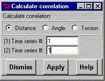

**************************************************************************
Calculate correlation widget command
Leif Laaksonen CSC 1996
**************************************************************************
Calculate correlation and autocorrelation functions from two time
series. There are three types of time series:
- Distance
- Angle
- Torsion angle
The time series fro these three possibilities are stored with a running number.
Choose first type of time series and then the running number of the time series
inside this group. If you choose the same time series for #1 and #2 you
calculate the autocorrelation function.

Line command: see calculate command
**************************************************************************
LUL/1996
**************************************************************************